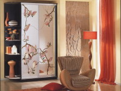
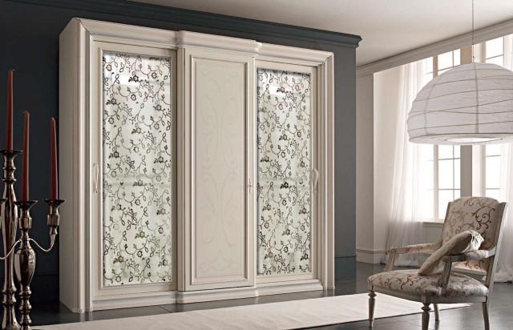

Ни для кого не секрет, что на сегодняшний день мебель является не столько предметом обихода, сколько важным элементом интерьера. Сейчас непросто представить современную квартиру без такого важного объекта как шкаф-купе. Учитывая то, что этот предмет мебели появился на современном рынке совершенно недавно, его по праву можно назвать мега-популярным и востребованным. Связано это в первую очередь с тем, что шкаф такого типа легко превратит нефункциональное пространство вместо сосредоточения необходимых вещей – постельных принадлежностей, аксессуаров, одежды. Фото со шкафами-купе отображают, как данный тип мебели впишется в пространство комнаты.
Проектирование
Сегодня мебельный рынок сбыта предлагает товары самого разнообразного дизайна. Формы варьируются от угловых либо встроенных вариантов до корпусных. Более того, при заказе можно регулировать размер изделия, материал, из которого изготавливается – от недорогих искусственных вариантов до ценных натуральных пород дерева. Даже самые искушенные в дизайнерских вопросах покупатели найдут для себя подходящую модель!
Всегда нужно помнить и о «внутренностях» самого шкафа. Наполнение его также может быть самым разным. Если же при просмотре фото угловых шкафов не найдено ничего подходящего, всегда можно оформить индивидуальный заказ. В таком случае все детали оговариваются, учитываются все пожелания и нюансы, в том числе и включение места для предметов, которые не входят в стандартное наполнение, например, гладильной доски.
Внешний вид изделия
Характерной особенностью шкафов такого типа являются раздвижные двери. Изучая фото шкафов-купе в прихожую, можно сделать вывод, какой тип максимально удачно впишется в интерьер комнаты, а также понять, что внимание нужно уделить не только внешнему виду шкафа. Учитывайте и наполнение изделия, освещенность и внутреннюю отделку. Такое пристальное внимание к деталям поможет подобрать именно тот вариант, который идеально вольется в общую атмосферу комнаты. Фото шкафа-купе в спальню продемонстрирует, является ли такой выбор данной мебели подходящим для этого помещения. Существует масса конструкций, которые способны увеличить функциональность и удобство шкафа.
Не имеет значения, для какого помещения выбран шкаф-купе. При любом варианте он поможет сэкономить пространство и уменьшить количество забот, связанных с распределением лишних вещей. Воспользовавшись предложениями нашей фабрики, вы сможете приобрести модели на любой вкус – объемные или малогабаритные, но главное – они идеально впишутся в дизайн вашей квартиры. Изучив варианты на фото, вы обязательно найдете то, что искали!
 Наши предложения
Наши предложения